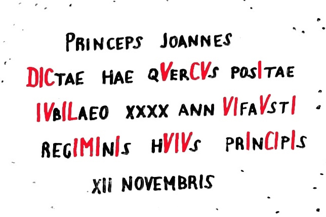
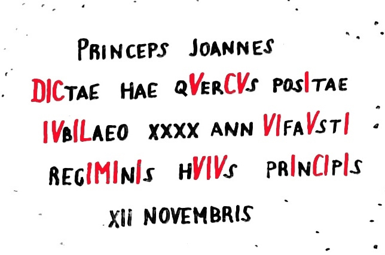

Chronogram
Chronogram je vyznaèení letopoètu v nápise na umìlecké památce tak, že písmena, shodující se s øímskými èíslicemi (M, D, C, L, X, V, I) jsou vìtší, pøípadnì zlacená nebo èervená. Souèet zvýraznìných písmen v nápise udává rok, z nìhož památka pochází.
Pøíklad výpoètu chronogramu
Nápis na následující fotografii ukrývá chronogram. Nìkterá písmena v nápisu jsou vìtší než ostatní. Z velkých písmen však poèítáme pouze ta, která odpovídají øímským èíslicím (poèáteèní "P" a "J" se tedy k výpoètu chronogramu nevyužije). Pro lepší èitelnost je nápis pøepsán na obrázku vpravo a velká písmena zahrnutá do výpoètu jsou zvýraznìna navíc ještì èervenou barvou.
 

Písmena "xxxx" v nápisu jsou malá, proto se do výpoètu chronogramu nezapoèítají. Stejnì je tomu i s posledním øádkem "xii novembris", ve kterém není žádné písmeno vìtší než ostatní.
| èíslice | poèet výskytù | výpoèet | souèet |
| M | 1 | 1 x 1000 | 1000 |
| D | 1 | 1 x 500 | 500 |
| C | 3 | 3 x 100 | 300 |
| L | 1 | 1 x 50 | 50 |
| X | 0 | 0 x 10 | 0 |
| V | 7 | 7 x 5 | 35 |
| I | 13 | 13 x 1 | 13 |
| Celkem | 1898 |
Památník ve výše uvedeném pøíkladu tedy pochází z roku 1898.